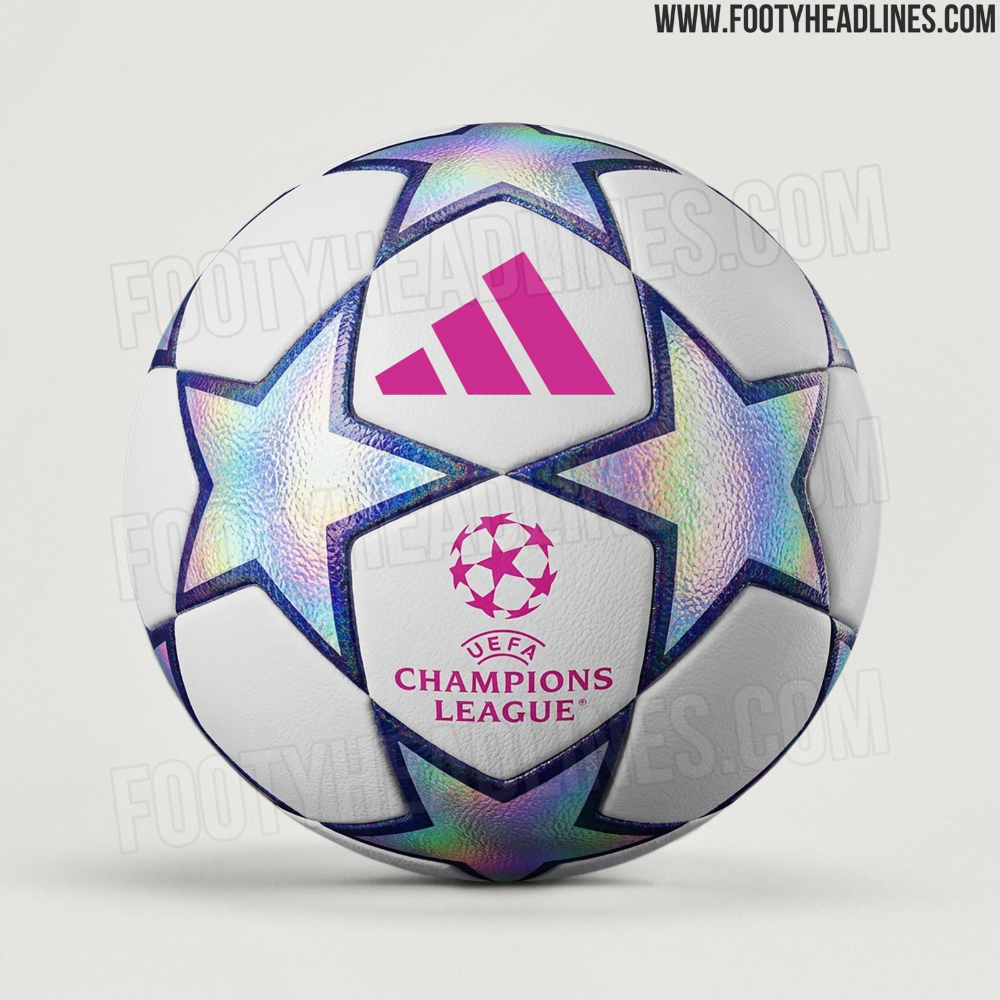

Premier League
Inglaterra — mi liga principal. Partidos rápidos, poco tiempo muerto, siempre hay opciones de gol.
Fútbol europeo, cada fin de semana
El fútbol es mi hobby desde hace años. Simplemente me gusta verlo, disfruto los partidos y no me pierdo la oportunidad de ver un buen encuentro cuando puedo. Aquí comparto un poco de por qué me gusta tanto.
Conoce mi hobbyEl fútbol me gusta desde hace mucho tiempo. Disfruto ver los partidos, sentir la emoción de un encuentro reñido y esa sensación de no saber cómo va a terminar hasta el final. Es un deporte que engancha, y verlo se ha vuelto una de mis actividades favoritas para relajarme.
Sigo principalmente el fútbol europeo, en particular la Premier League, LaLiga y la Serie A. Los fines de semana suelo sentarme desde la mañana a ver varios partidos seguidos, aunque disfruto viendo fútbol cuando se pueda, entre semana o fin de semana, como este mes con la Champions.
Inglaterra — mi liga principal. Partidos rápidos, poco tiempo muerto, siempre hay opciones de gol.
España — la veo en los partidos importantes. Me gusta el nivel técnico de los jugadores.
Italia — la que más me ha sorprendido. Equipos ordenados, partidos que se sienten como ajedrez.
Más allá de que simplemente me gusta, ver fútbol regularmente me ha traído cosas buenas que no esperaba.
Sentarme a ver un partido es una forma fácil de desconectarme un rato de la universidad y del celular.
Es un buen punto en común con amigos y compañeros, incluso con gente que no conozco tan bien.
Ver cómo un equipo cambia su forma de jugar según el rival me ha hecho pensar más en toma de decisiones bajo presión.

Old Trafford, estadio del Manchester United

Spotify Camp Nou, del FC Barcelona

Balón oficial de la UEFA Champions League

El Allianz Arena
No trates de seguir todo a la vez. Yo empecé con la Premier League y de ahí fui sumando las demás poco a poco.
Tener un equipo favorito hace que cada partido importe más y sea más fácil mantener el interés.
Partidos como el Real Madrid contra Barcelona o los derbis locales suelen ser los más emocionantes.
¿También te gusta el fútbol europeo? Escríbeme y hablamos del próximo partido.